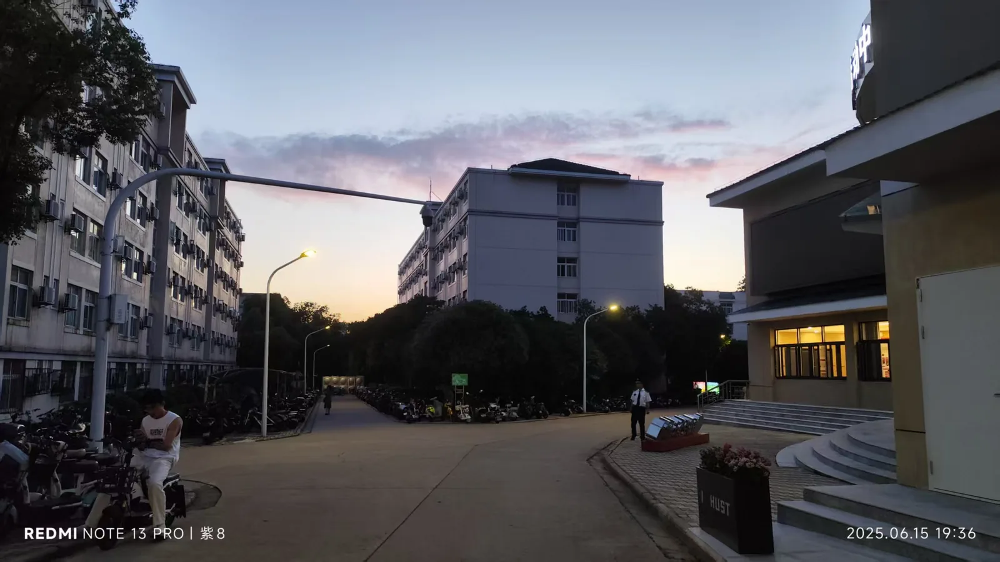
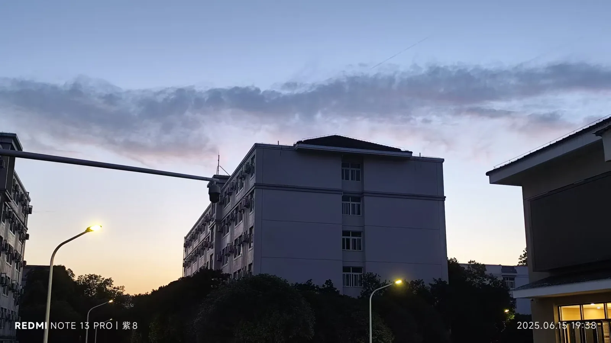

Journal · 2025-06-15
定位华中科技大学紫菘学生公寓5栋532
老师们，快救救我！我刚才删除了Jupiterlab目录中不需要的文件夹，一不小心把电脑里的文件全删没了！TMD，我该怎么恢复？回收站中也找不到了，傻逼豆包！告诉我通过JupyterLab终端插件删除！
我的Video、Music、文档、桌面，全TMD没了！老子以后得准备个U盘，把已存档的文件装进去，物理封存！我今后得先看完课程，再动手操作；自己边看边操作边捣鼓，一不小心就失误了！豆包的傻逼指令，比灭霸的响指还厉害呀！
我两手摸白纸，两眼望青天。有种想跳楼的感觉了。上个月差点得了抑郁症，这个月又犯了中二病。现在看来，抑郁症有所缓解，那就很有可能体现为中二病。我已经是抑郁症早期、中二病晚期了。这个月的小金库都没了，老子要跳楼，妈的！
豆包那个傻逼！朱文佳他妈死了，研发的豆包AI害死我了！只能借助神之一手的力量了。技术服务680元，外接硬盘406元，1000块钱就这样没了。我的小金库彻底清空了，我操他妈的，豆包的该死的指令！
我得去吃麻辣香锅了。
人生忽如寄，
不负茶、汤、好天气！
下午一点的时候，我的眼泪像果冻一样掉下来，鼻涕全都擦在手上了，一边哭一边找技术人员帮忙。上一次这么伤心，还是在用Python搞语音转文字。也是被豆包忽悠了，大晚上一边调试一边哭，一边呕气一边干呕，同时还要骂骂咧咧。脑子里像是有两弹一星在爆炸，绝望到抽搐的时候，两手摸白纸，两眼望青天。感觉自己无知又脆弱，根本做不成自己想要做的事，举世皆与我为敌。但现在已经是下午六点多了，我得吃一顿麻辣香锅，回去接着捣鼓Anaconda。我也没洗脸，也没洗手，就心神不宁地出去了。悠悠苍天，何薄于我！可能“泣下沾襟”，就是这种情形吧。
这个黑匣子，竟然要500多块。这个技术服务，竟然要600多块。


rmdir /S /Q unwanted_folder复制、粘贴、执行这一行代码，5秒钟不到！我的picture、videos、music文档、桌面，大约387GB文件，实际创建时间，跨度有7年，一朝误删，全TMD没了！
给泪下沾襟的自己留个记忆，这天光夜色真好看！
总算恢复到E盘了。